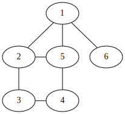

Undirected Graph Traversal

Graphs and Nodes
Graphs are a collection of nodes and edges, and can be directed (their edges have a “direction”) or undirected (edges are bi-directional). A hash table is used to model the edges, with nodes as keys whose values are a list of nodes the key node is connected to.
(defclass graph () ((edges :initform (make-hash-table) :accessor edges) (directed :initform nil :accessor directed))) (defclass node () ((nid :initarg :nid :accessor nid))) (defmethod add-edge ((obj graph) (from node) (to node)) (if (not (neighbor-p obj from to)) (progn (set-neighbors obj from (append (neighbors obj from) (list to))) (if (not (directed obj)) (add-edge obj to from))))) (defmethod print-object ((n node) out) ; helpful when viewing traversal results (print-unreadable-object (n out :type t) (format out "nid: ~s" (nid n))))
Neighbors are any nodes that are connected by an edge.
(defmethod neighbors ((obj graph) (n1 node)) (gethash n1 (edges obj))) (defun set-neighbors (g n v) (setf (gethash n (edges g)) v)) (defun neighbor-p (g n1 n2) (if (member n2 (neighbors g n1)) t nil))
Defining a Graph
The graph at the top of the page can then be defined as follows:
(defparameter g (make-instance 'graph)) (defparameter one (make-instance 'node :nid 1)) (defparameter two (make-instance 'node :nid 2)) (defparameter three (make-instance 'node :nid 3)) (defparameter four (make-instance 'node :nid 4)) (defparameter five (make-instance 'node :nid 5)) (defparameter six (make-instance 'node :nid 6)) (add-edge g one two) (add-edge g one five) (add-edge g one six) (add-edge g two three) (add-edge g two five) (add-edge g three four) (add-edge g four five)
Work List
work-list is a base class that acts as a container for nodes that have been
seen during graph traversal and those that are waiting to be operated on.
work-next pops nodes from the waiting list, so the first waiting node is
always returned. Thus the order of insertion into the waiting list determines
the order in which nodes are worked.
(defclass work-list () ((seen :initform nil :accessor seen) (waiting :initform nil :accessor waiting))) (defmethod work-next ((wl work-list)) (let ((next-node (pop (waiting wl)))) (setf (seen wl) (append (seen wl) (list next-node))) next-node)) (defmethod work-list-empty-p ((wl work-list)) (if (waiting wl) nil t))
Generic Graph Traversal
Graphs can be traversed (visiting each node) in a generic fashion by:
- Given a start node
- Find all neighbors of the start node that haven’t been seen before
- Add these missing neighbors to a collection of node’s waiting to be worked
- Mark the start node as having been seen
- Grab the next node from the waiting collection
- Repeat the process with the next node, stopping when there is no more nodes waiting
(defmethod traverse-graph ((obj graph) (start node) (wl work-list)) (add-work wl (list start)) (loop while (not (work-list-empty-p wl)) do (let ((current-node (work-next wl))) (add-work wl (ordered-set-difference (neighbors obj current-node) (append (seen wl) (waiting wl)))) (print current-node))) (seen wl)) (defun ordered-set-difference (list1 list2) (loop for x in list1 when (not (find x list2)) collect x))
Breadth First Search
Breadth first traversal visits all neighbors of the start node, then all neighbors
of the neighbors, and so on. This behavior is modeled by using a first-in
first-out queue to contain the nodes that are waiting to be visited. work-list
can be made to act as a queue by appending unseen neighbors of a given node to
the end of the waiting list. naive-queue subclasses work-list to allow
specialization of the add-work method for queue insertion behavior.
(defclass naive-queue (work-list) ()) (defmethod add-work ((nq naive-queue) new-work) (setf (waiting nq) (nconc (waiting nq) new-work)))
Traversing g in a breadth-first manner would happen as follows:
| Seen | Current-Node | Queue |
|---|---|---|
| - | 1 | 2, 5, 6 |
| 1 | 2 | 5, 6, 3 |
| 1, 2 | 5 | 6, 3, 4 |
| 1, 2, 5 | 6 | 3, 4 |
| 1, 2, 5, 6 | 3 | 4 |
| 1, 2, 5, 6, 3 | 4 | - |
| 1, 2, 5, 6, 3, 4 | - | - |
Using naive-queue to traverse the graph:
(defparameter work-list-queue (make-instance 'naive-queue)) (traverse-graph g one work-list-queue)
(#<NODE nid: 1> #<NODE nid: 2> #<NODE nid: 5> #<NODE nid: 6> #<NODE nid: 3> #<NODE nid: 4>)
Depth First Search
Depth first search visits the first child of the start node, followed by the
first child of the first child, etc. This is modeled with a first-in last-out
stack to contain waiting nodes. Insertion in to the stack puts the unseen
neighbors of a given node on the front of the waiting list. naive-stack
subclasses work-list such that add-work may be specialized to accomplish
this.
(defclass naive-stack (work-list) ()) (defmethod add-work ((ns naive-stack) new-work) (setf (waiting ns) (nconc new-work (waiting ns))))
Traversing g in a depth-first manner would happen as follows:
| Seen | Current-Node | Stack |
|---|---|---|
| - | 1 | 2, 5, 6 |
| 1 | 2 | 3, 5, 6 |
| 1, 2 | 3 | 4, 5, 6 |
| 1, 2, 3 | 4 | 5, 6 |
| 1, 2, 3, 4 | 5 | 6 |
| 1, 2, 3, 4, 5 | 6 | - |
| 1, 2, 3, 4, 5, 6 | - | - |
Using naive-stack to traverse the graph:
(defparameter work-list-stack (make-instance 'naive-stack)) (traverse-graph g one work-list-stack)
(#<NODE nid: 1> #<NODE nid: 2> #<NODE nid: 3> #<NODE nid: 4> #<NODE nid: 5> #<NODE nid: 6>)